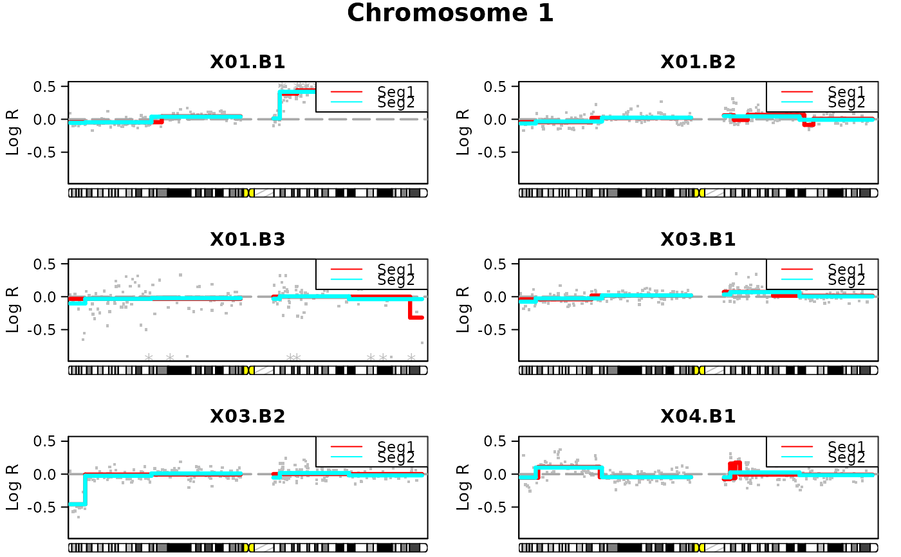
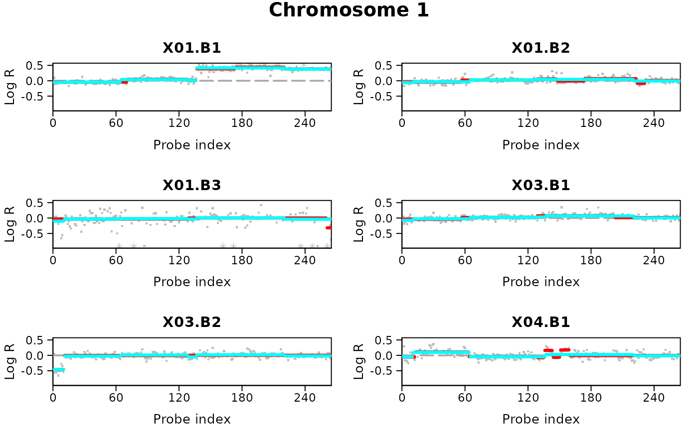
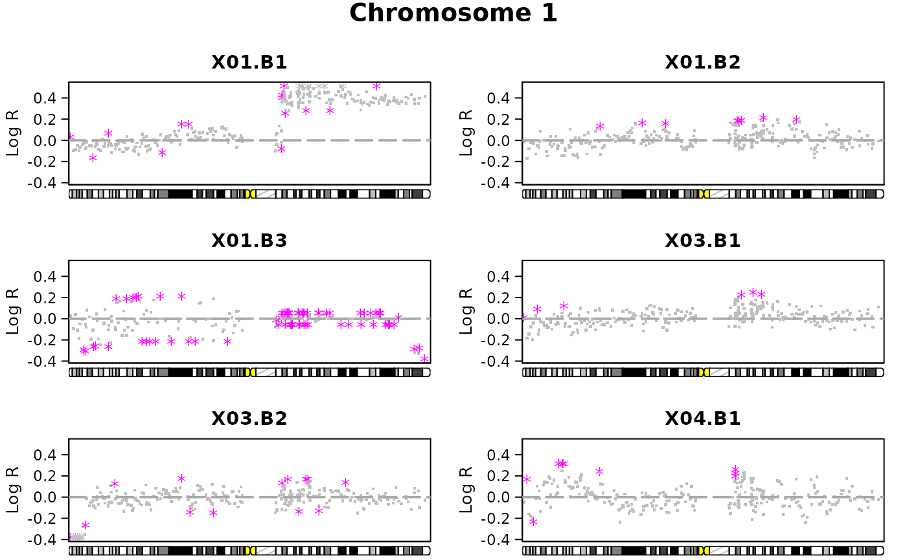

Plot copy number data and/or segmentation results for each chromosome separately with samples in different panels.
Usage
plotChrom(
data = NULL,
segments = NULL,
pos.unit = "bp",
sample = NULL,
chrom = NULL,
assembly = "hg19",
winsoutliers = NULL,
xaxis = "pos",
layout = c(1, 1),
plot.ideo = TRUE,
...
)Arguments
- data
a data frame with numeric or character chromosome numbers in the first column, numeric local probe positions in the second, and numeric copy number data for one or more samples in subsequent columns. The header of the copy number columns should be the sample IDs.
- segments
a data frame or a list of data frames containing the segmentation results found by either
pcformultipcf.- pos.unit
the unit used to represent the probe positions. Allowed options are "mbp" (mega base pairs), "kbp" (kilo base pairs) or "bp" (base pairs). By default assumed to be "bp".
- sample
a numeric vector indicating which sample(s) is (are) to be plotted. The number(s) should correspond to the sample's place (in order of appearance) in
data, or insegmentsin casedatais unspecified.- chrom
a numeric or character vector with chromosome number(s) to indicate which chromosome(s) is (are) to be plotted.
- assembly
a string specifying which genome assembly version should be applied to define the chromosome ideogram. Allowed options are "hg19", "hg18", "hg17" and "hg16" (corresponding to the four latest human genome annotations in the UCSC genome browser).
- winsoutliers
an optional data frame of the same size as
dataidentifying observations classified as outliers bywinsorize. If specified, outliers will be marked by a different color and symbol than the other observations (seewins.colandwins.pch).- xaxis
either "pos" or "index". The former implies that the xaxis will represent the genomic positions, whereas the latter implies that the xaxis will represent the probe index. Default is "pos".
- layout
an integer vector of length two giving the number of rows and columns in the plot. Default is
c(1,1).- plot.ideo
a logical value indicating whether the chromosome ideogram should be plotted. Only applicable when
xaxis="pos".- ...
other graphical parameters. These include the common plot arguments
xlab,ylab,main,xlim,ylim,col(default is "grey"),pch(default is 46, equivalent to "."),cex,cex.lab,cex.main,cex.axis,las,tcl,marandmgp(seeparon these). In addition, a range of graphical arguments specific for copy number plots may be specified, seeplotSampleon these.
Details
Several plots may be produced on the same page with the layout
option. If the number of plots exceeds the desired page layout, the user is
prompted before advancing to the next page of output.
Note
This function applies par(fig), and is therefore not
compatible with other setups for arranging multiple plots in one device
such as par(mfrow,mfcol).
Examples
#Lymphoma data
data(lymphoma)
#Take out a smaller subset of 6 samples (using subsetData):
sub.lymphoma <- subsetData(lymphoma,sample=1:6)
#Winsorize data:
wins.res <- winsorize(data=sub.lymphoma,return.outliers=TRUE)
#> winsorize finished for chromosome arm 1p
#> winsorize finished for chromosome arm 1q
#> winsorize finished for chromosome arm 2p
#> winsorize finished for chromosome arm 2q
#> winsorize finished for chromosome arm 3p
#> winsorize finished for chromosome arm 3q
#> winsorize finished for chromosome arm 4p
#> winsorize finished for chromosome arm 4q
#> winsorize finished for chromosome arm 5p
#> winsorize finished for chromosome arm 5q
#> winsorize finished for chromosome arm 6p
#> winsorize finished for chromosome arm 6q
#> winsorize finished for chromosome arm 7p
#> winsorize finished for chromosome arm 7q
#> winsorize finished for chromosome arm 8p
#> winsorize finished for chromosome arm 8q
#> winsorize finished for chromosome arm 9p
#> winsorize finished for chromosome arm 9q
#> winsorize finished for chromosome arm 10p
#> winsorize finished for chromosome arm 10q
#> winsorize finished for chromosome arm 11p
#> winsorize finished for chromosome arm 11q
#> winsorize finished for chromosome arm 12p
#> winsorize finished for chromosome arm 12q
#> winsorize finished for chromosome arm 13q
#> winsorize finished for chromosome arm 14q
#> winsorize finished for chromosome arm 15q
#> winsorize finished for chromosome arm 16p
#> winsorize finished for chromosome arm 16q
#> winsorize finished for chromosome arm 17p
#> winsorize finished for chromosome arm 17q
#> winsorize finished for chromosome arm 18p
#> winsorize finished for chromosome arm 18q
#> winsorize finished for chromosome arm 19p
#> winsorize finished for chromosome arm 19q
#> winsorize finished for chromosome arm 20p
#> winsorize finished for chromosome arm 20q
#> winsorize finished for chromosome arm 21q
#> winsorize finished for chromosome arm 22q
#> winsorize finished for chromosome arm 23p
#> winsorize finished for chromosome arm 23q
#Use pcf to find segments:
uni.segments <- pcf(data=wins.res,gamma=12)
#> pcf finished for chromosome arm 1p
#> pcf finished for chromosome arm 1q
#> pcf finished for chromosome arm 2p
#> pcf finished for chromosome arm 2q
#> pcf finished for chromosome arm 3p
#> pcf finished for chromosome arm 3q
#> pcf finished for chromosome arm 4p
#> pcf finished for chromosome arm 4q
#> pcf finished for chromosome arm 5p
#> pcf finished for chromosome arm 5q
#> pcf finished for chromosome arm 6p
#> pcf finished for chromosome arm 6q
#> pcf finished for chromosome arm 7p
#> pcf finished for chromosome arm 7q
#> pcf finished for chromosome arm 8p
#> pcf finished for chromosome arm 8q
#> pcf finished for chromosome arm 9p
#> pcf finished for chromosome arm 9q
#> pcf finished for chromosome arm 10p
#> pcf finished for chromosome arm 10q
#> pcf finished for chromosome arm 11p
#> pcf finished for chromosome arm 11q
#> pcf finished for chromosome arm 12p
#> pcf finished for chromosome arm 12q
#> pcf finished for chromosome arm 13q
#> pcf finished for chromosome arm 14q
#> pcf finished for chromosome arm 15q
#> pcf finished for chromosome arm 16p
#> pcf finished for chromosome arm 16q
#> pcf finished for chromosome arm 17p
#> pcf finished for chromosome arm 17q
#> pcf finished for chromosome arm 18p
#> pcf finished for chromosome arm 18q
#> pcf finished for chromosome arm 19p
#> pcf finished for chromosome arm 19q
#> pcf finished for chromosome arm 20p
#> pcf finished for chromosome arm 20q
#> pcf finished for chromosome arm 21q
#> pcf finished for chromosome arm 22q
#> pcf finished for chromosome arm 23p
#> pcf finished for chromosome arm 23q
#Use multipcf to find segments as well:
multi.segments <- multipcf(data=wins.res,gamma=12)
#> multipcf finished for chromosome arm 1p
#> multipcf finished for chromosome arm 1q
#> multipcf finished for chromosome arm 2p
#> multipcf finished for chromosome arm 2q
#> multipcf finished for chromosome arm 3p
#> multipcf finished for chromosome arm 3q
#> multipcf finished for chromosome arm 4p
#> multipcf finished for chromosome arm 4q
#> multipcf finished for chromosome arm 5p
#> multipcf finished for chromosome arm 5q
#> multipcf finished for chromosome arm 6p
#> multipcf finished for chromosome arm 6q
#> multipcf finished for chromosome arm 7p
#> multipcf finished for chromosome arm 7q
#> multipcf finished for chromosome arm 8p
#> multipcf finished for chromosome arm 8q
#> multipcf finished for chromosome arm 9p
#> multipcf finished for chromosome arm 9q
#> multipcf finished for chromosome arm 10p
#> multipcf finished for chromosome arm 10q
#> multipcf finished for chromosome arm 11p
#> multipcf finished for chromosome arm 11q
#> multipcf finished for chromosome arm 12p
#> multipcf finished for chromosome arm 12q
#> multipcf finished for chromosome arm 13q
#> multipcf finished for chromosome arm 14q
#> multipcf finished for chromosome arm 15q
#> multipcf finished for chromosome arm 16p
#> multipcf finished for chromosome arm 16q
#> multipcf finished for chromosome arm 17p
#> multipcf finished for chromosome arm 17q
#> multipcf finished for chromosome arm 18p
#> multipcf finished for chromosome arm 18q
#> multipcf finished for chromosome arm 19p
#> multipcf finished for chromosome arm 19q
#> multipcf finished for chromosome arm 20p
#> multipcf finished for chromosome arm 20q
#> multipcf finished for chromosome arm 21q
#> multipcf finished for chromosome arm 22q
#> multipcf finished for chromosome arm 23p
#> multipcf finished for chromosome arm 23q
#Plot data and segments for chromosome 1 separately for each sample:
plotChrom(data=sub.lymphoma,segments=list(uni.segments,multi.segments),chrom=1,
layout=c(3,2))

#Let xaxis be probe index, and do not connect segments by vertical lines:
plotChrom(data=sub.lymphoma,segments=list(uni.segments,multi.segments),chrom=1,
xaxis="index",layout=c(3,2),legend=FALSE,connect=FALSE)

#Data was winsorized earlier. Mark winsorized values by different color
#and symbol:
plotChrom(data=wins.res,chrom=1,winsoutliers=wins.res,layout=c(3,2))

#Save plots to a directory:
plotChrom(data=sub.lymphoma,segments=uni.segments,chrom=c(1,2),
layout=c(3,2),dir.print=tempdir(),file.name=c("chromosome1","chromosome2"),
onefile=FALSE)
#> Plot was saved in /tmp/RtmpvxYjYg/chromosome1.pdf
#> Plot was saved in /tmp/RtmpvxYjYg/chromosome2.pdf